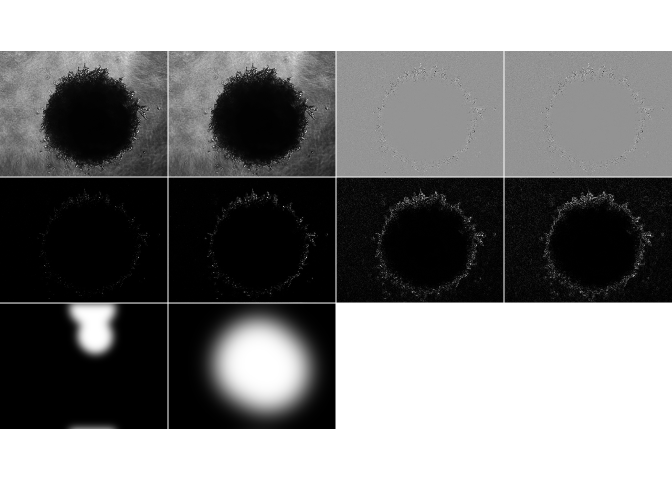

Motivation
The goal of clasifierrr is to … classify image regions using R.
In my field of study, there are many cases where one has a lot of images that require classification. Whether it is counting cells, quantifying areas in IHC, counting dots in cells, measuring spheroid sizes … And it would be nice to automate those tasks.
Nonetheless, many of those classification parameters are experiment-specific, making a generalized classifier inpractical. In addition, the number of images is usually enough to be extremely tedious to work out by a human but not enough to train a neural network.
clasifierrr takes care of those cases, where small datasets are used to build a clasification algorithm and allow the user to deploy it on many images.
Workflow
- Externally create the masking files for the classification
- Internally create a parameters data frame
- use
build_train_multito create the training dataset - use
rangerto train the classifier - use
classify_imgto classify as many images as you want - (optional) use
filter_masksto remove objects that are too small or too big
Example
library(clasifierrr)
library(EBImage)
library(ranger)
## basic example code
##
##
params_df <- tibble::tibble(
file = c(
system.file(
"extdata", "tiny_4T1-shNT-1_layer1.png",
package = "clasifierrr"),
system.file(
"extdata", "tiny_4T1-shNT-1_layer2.png",
package = "clasifierrr")),
classif = c("spheroid", "bg"),
related_file = system.file(
"extdata", "tiny_4T1-shNT-1.png",
package = "clasifierrr")
)
params_df
#> # A tibble: 2 x 3
#> file classif related_file
#> <chr> <chr> <chr>
#> 1 /home/jspaezp/R/x86_64-redhat-li… sphero… /home/jspaezp/R/x86_64-redhat-linux…
#> 2 /home/jspaezp/R/x86_64-redhat-li… bg /home/jspaezp/R/x86_64-redhat-linux…Form of the classifier files
It has to be a file of the same size of the related image, where it is all black except for the desired classifier section.
Several classifications can be used.
I personally use gimp to generate those, just open the image you want to classify, draw on a new layer, disable the main layer and export to a png.
base_image <- readImageBw(system.file(
"extdata", "tiny_4T1-shNT-1.png",
package = "clasifierrr"))
display(base_image, method = "raster")
display(readImageBw(system.file(
"extdata", "tiny_4T1-shNT-1_layer1.png",
package = "clasifierrr")), method = "raster")
display(readImageBw(system.file(
"extdata", "tiny_4T1-shNT-1_layer2.png",
package = "clasifierrr")), method = "raster")
Calculating Features
The classifier is based on the concept of features, which is applying several filters to the image to detect edges and calculate the consistency with the neighborhood.
you can use as many filters as you want but THE FILTER WIDTHS HAVE TO BE ODD NUMBERS, also consider that the more filters, the more memmory you will need.
features <- calc_features(base_image, filter_widths = c(3,5))
#> Starting to calculate features for image of width 154 and height 205
#> Filters of size: {3,5}
#>
#> Attaching package: 'purrr'
#> The following object is masked from 'package:EBImage':
#>
#> transpose
#>
#> Took 0.56 secs to calculate the 7 features for 31570 pixels
head(features, 2)
#> gauss_filt_3 gauss_filt_5 gauss_diff_3 var_filt_3 var_filt_5 sobel_filt_3
#> 1 0.4868591 0.4882913 0.002864240 0.002066252 0.003918570 0.11379308
#> 2 0.4860857 0.4887673 0.005363217 0.001608498 0.005823959 0.09180157
#> sobel_filt_5
#> 1 0.1305947
#> 2 0.3050769Each of the columns can be made to an image

Building a training dataset from the files
The program goes in to the files, generates the features form the base image and assigns a classification to the pixles that overlap with the region you defined in the “classifier files” (the ones that look like squigly lines)
trainset <- build_train_multi(params_df, filter_widths = c(3,5))
#> Returning for file: /home/jspaezp/R/x86_64-redhat-linux-gnu-library/3.6/clasifierrr/extdata/tiny_4T1-shNT-1_layer1.png and classification" spheroid " a total of { 8556 } positive pixels
#> Returning for file: /home/jspaezp/R/x86_64-redhat-linux-gnu-library/3.6/clasifierrr/extdata/tiny_4T1-shNT-1_layer2.png and classification" bg " a total of { 14056 } positive pixels
#> Starting to calculate features for image of width 154 and height 205
#> Filters of size: {3,5}
#>
#> Took 0.2 secs to calculate the 7 features for 31570 pixels
#> Warning in build_train(feat_img = calc_features(preprocess_fun_img(readImageBw(.x)), : The selected train size(50000) is larger than the number of classified pixels (22567) so the number is getting updated to the total number of available pixels
#> Classified objects are of classesbg: 14056 and spheroid: 8511
#> Returning a data frame of 22567 rows and 8 columns
head(trainset)
#> gauss_filt_3 gauss_filt_5 gauss_diff_3 var_filt_3 var_filt_5 sobel_filt_3
#> 1 0.5130531 0.5157537 0.005401085 0.0012942790 0.004966239 0.09146591
#> 2 0.2212109 0.2334967 0.024571453 0.0044569752 0.035891620 0.44568071
#> 3 0.3287143 0.3405416 0.023654732 0.0001985941 0.004007494 0.08942552
#> 4 0.4482787 0.4417664 -0.013024574 0.0030757401 0.008562414 0.13719887
#> 5 0.3351167 0.3338322 -0.002568938 0.0014634447 0.005087734 0.12201058
#> 6 0.3351575 0.3458551 0.021395279 0.0015295162 0.005083933 0.16683959
#> sobel_filt_5 pixel_class
#> 1 0.19231686 bg
#> 2 1.34108473 spheroid
#> 3 0.25861548 bg
#> 4 0.35174088 bg
#> 5 0.04722194 bg
#> 6 0.14557421 bgTrain a classifier
Here we use any “machine learning” algorithm as our classifier. I really like ranger, so that is what I will recommend.
classifier <- ranger(
pixel_class ~ .,
data = trainset,
num.trees = 100,
importance = "impurity",
min.node.size = 5,
max.depth = 200)
classifier
#> Ranger result
#>
#> Call:
#> ranger(pixel_class ~ ., data = trainset, num.trees = 100, importance = "impurity", min.node.size = 5, max.depth = 200)
#>
#> Type: Classification
#> Number of trees: 100
#> Sample size: 22567
#> Number of independent variables: 7
#> Mtry: 2
#> Target node size: 5
#> Variable importance mode: impurity
#> Splitrule: gini
#> OOB prediction error: 0.92 %If the classifier was trained using importance = "impurity", you can ask it to give you the relative importance of the variables used.
Using the classifier on an image
The classify_img has an interface for many kinds of inputs depending on what you have planned.
It Can be used directly on calculated features …
# This just reads the image to classify
test_img <- readImageBw(system.file(
"extdata", "tiny_4T1-shNT-1.png",
package = "clasifierrr"))
test_feat <- calc_features(test_img, filter_widths = c(3,5))
#> Starting to calculate features for image of width 154 and height 205
#> Filters of size: {3,5}
#>
#> Took 0.21 secs to calculate the 7 features for 31570 pixels
class_img <- classify_img(
classifier,
feature_frame = test_feat,
dims = dim(test_img),
class_highlight = "spheroid")
#> Starting classification
#> Took 0.3132 secs to predict the image
display(class_img, method = "raster")
It can also be used on a raw image …
class_img <- classify_img(
classifier,
img = test_img,
filter_widths = c(3,5))
#> Attempting to calculate features
#> Starting to calculate features for image of width 154 and height 205
#> Filters of size: {3,5}
#>
#> Took 0.19 secs to calculate the 7 features for 31570 pixels
#> Starting classification
#> Took 0.3317 secs to predict the image
#> Warning in classify_img(classifier, img = test_img, filter_widths = c(3, : Found in the final classification {12443} values more than 1 and {0} values less than 0, This might be undesired in the final image and lead to inconsistencies
# display(colorLabels(class_img), method = "raster")And as well in a system file
class_img <- classify_img(
classifier,
path = system.file(
"extdata", "tiny_4T1-shNT-1.png",
package = "clasifierrr"),
filter_widths = c(3,5),
class_highlight = "spheroid")
#> Attempting to read image from file/home/jspaezp/R/x86_64-redhat-linux-gnu-library/3.6/clasifierrr/extdata/tiny_4T1-shNT-1.png
#> Attempting to calculate features
#> Starting to calculate features for image of width 154 and height 205
#> Filters of size: {3,5}
#>
#> Took 0.34 secs to calculate the 7 features for 31570 pixels
#> Starting classification
#> Took 0.3135 secs to predict the image
# display(class_img, method = "raster")Cleaning the final image
The final image can be cleaned manually or using filter_masks, which can remove stuff either too big or small.
As a reminder, white regions are considered objects, so if your object is black, try running something like img <- 1- img
filt_class_img <- filter_masks(min_radius = 10, max_radius = Inf, mask = class_img)
display(filt_class_img, method = "raster")
table(filt_class_img)
#> filt_class_img
#> 0 1
#> 19146 12424
filt_class_img
#> Image
#> colorMode : Grayscale
#> storage.mode : integer
#> dim : 205 154
#> frames.total : 1
#> frames.render: 1
#>
#> imageData(object)[1:5,1:6]
#> [,1] [,2] [,3] [,4] [,5] [,6]
#> [1,] 0 0 0 0 0 0
#> [2,] 0 0 0 0 0 0
#> [3,] 0 0 0 0 0 0
#> [4,] 0 0 0 0 0 0
#> [5,] 0 0 0 0 0 0